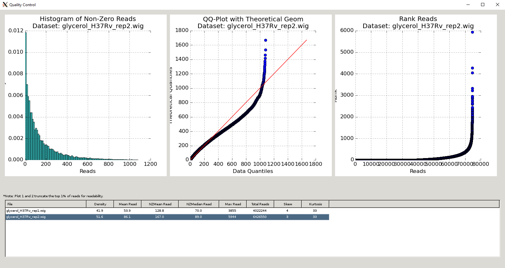
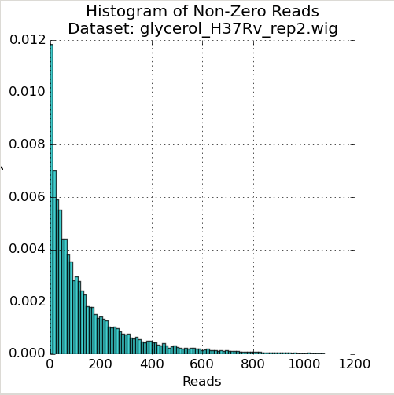
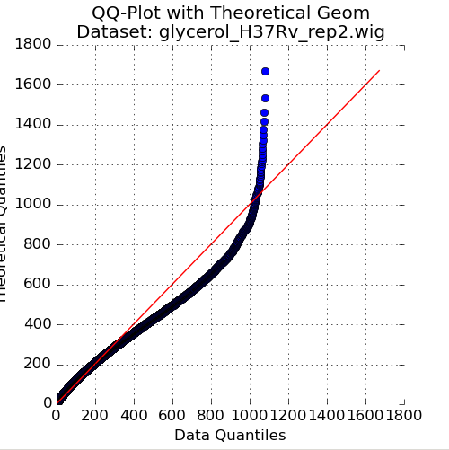
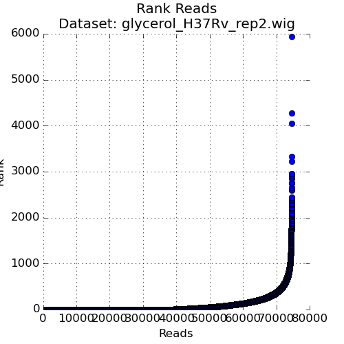

Quality Control
TRANSIT has several useful features to help inspect the quality of datasets as and export them to different formats. (see also TPP Statistics )
As you add datasets to the control or experimental sections, TRANSIT automatically provides some metrics like density, average, read-counts and max read-count to give you an idea of how the quality of the dataset.
However, TRANSIT provides more in-depth statistics in the Quality Control window. To use this feature, add the annotation file for your organism (in .prot_table or GFF3 format). Next, add and highlight/select the desired read-count datasets in .wig format. Finally, click on View -> Quality Control. This will open up a new window containing a table of metrics for the datasets as well as figures corresponding to whatever dataset is currently highlighted.
{kind=link}
QC Metrics Table
The Quality Control window contains a table of the datasets and metrics, similar to the one in the main TRANSIT interface. This table has an extended set of metrics to provide a better picture of the quality of the datasets:
Column Header |
Column Definition |
Comments |
|---|---|---|
File |
Name of dataset file. |
|
Density |
Fraction of sites with insertions. |
“Well saturated” Himar1 datasets have >30% saturation. Beneath this, statistical methods may have trouble. |
Mean Read |
Average read-count, including empty sites. |
|
NZMean Read |
Average read-count, excluding empty sites. |
A value between 30-200 is usually good for Himar1 datasets. Too high or too low can indicate problems. |
NZMedian Read |
Median read-count, excluding empty sites. |
As read-counts can often have spikes, median serves as a good robust estimate. |
Max Read |
Largest read-count in the dataset. |
Useful to determine whether there are outliers/spikes, which may indicate sequencing issues. |
Total Reads |
Sum of total read-counts in the dataset. |
Indicates how much sequencing material was obtained. Typically >1M reads is desired for Himar1 datasets. |
Skew |
Skew of read-counts in the dataset. |
Large skew may indicate issues with a dataset. Typically a skew < 50 is desired. May be higher when library is under strong selection |
Kurtosis |
Kurtosis of the read-counts in the dataset. |
QC Plots
The Quality Control window also contains several plots that are helpful to visualize the quality of the datasets. These plots are unique to the dataset selected in the Metrics Table (below the figures). They will update depending on which row in the Metrics Table is selected:
Figure 1: Read-Count Distribution
{kind=link}
The first plot in the Quality Control window is a histogram of the non-zero read-counts in the selected dataset. While read-counts are not truly geometrically distributed, “well-behaved” datasets often look “Geometric-like”, i.e. low counts are more frequent than very large counts. Datasets which where this is not the case may reflect a problem.
Figure 2: QQ-Plot of Read-Counts vs Geometric Distribution
{kind=link}
The second plot in the Quality Control window is a quantile-quantile plot (“QQ plot”) of the non-zero read-counts in the selected dataset, versus a theoretical geometric distribution fit on these read-counts. While read-counts are not truly geometrically distributed, the geometric distribution (a special case of the Negative Binomial distribution), can serve as a quick comparison to see how well-behaved the datasets are.
As the read-counts are not truly geometric, some curvature in the QQplot is expected. However, if the plot curves strongly from the identity line (y=x) then the read-counts may be highly skewed. In this case, using the “betageom” normalization option when doing statistical analyses may be a good idea as it is helpful in correcting the skew.
Figure 3: Ranked plot of Read-Counts
{kind=link}
The second plot in the Quality Control window is a plot of the read-counts in sorted order. This may be helpful in indentifying outliers that may exist in the dataset. Typically, some large counts are expected and some normalization methods, like TTR, are robust to such outliers. However, too many outliers, or one single outlier that is overhwelmingly different than the rest may indicate an issue like PCR amplification (especially in libraries constructed older protocols).
Interpretation of Data Quality
It is important to be able to evaluate the quality of datasets. In a nutshell, we look at statistics like saturation, and mean read count, but also things like max count and skewness.
There are two ways to do QC in Transit - via the GUI and command-line. In the GUI, one can load a set of wig files a select “View->Quality Control” in the menu; this will display some plots of read-count distribution. Ideally, you want most of your datasets to fall along the diagonal on a QQ-plot. Real data will often deviate somewhat (I will try to be more quantitative about this in the future), but if a dataset skews far off from the diagonal, it could cause problems with analytical methods like resampling or the HMM.

You can also generate the same table to statistics as on the QC panel from the command-line using the tnseq_stats command.
Below the plots are a table of statistics. While there are not rigorous criteria for defining “bad” datasets, rules of thumb I use for “good” datasets are: density>30% (ideally >50%) and NZmean>10 (ideally >50). In addition, I look at MaxReadCount and Skewness as indicators. Typically, MaxReadCount will be in the range of a few thousand to tens-of-thousands. If you see individual sites with counts in the range of 105-106 , it might mean you have some positive selection at a site (e.g. biological, or due to PCR jackpotting), and this can have the effect of reducing counts and influencing the distribution at all the other sites. If MaxReadCount<100, that is also probably problematic (either not enough reads, or possibly skewing). Also, skewness>30 often (but not always) signals a problem. Kurtosis doesn’t seem to be very meaningful. The reason it is not easy to boil all these down to a simple set of criteria is that some some of the metrics interact with each other.
Beta-Geometric Correction
If you have a “bad” or poorly-behaving or “skewed” dataset (e.g. with mostly low counts, dominated by a few high counts), right now the only remedy you can try is applying the Beta-Geometric correction (BGC), which is a non-linear adjustment to the insertion counts in a wig file to make them more like an ideal Geometric distribution (DeJesus & Ioerger, 2016). (Note, all the other normalizations, like TTR, are linear adjustments, and so they can’t correct for skewing.)
In the GUI, when you are looking, you can change the normalization (e.g. from TTR to betageom) using the drop-down. Be aware that the Beta-Geometric normalization is compute-intensive and might take few minutes.
If it looks like it might help (i.e. if the QQ-plot fits the diagonal better using BG normalization), you can created BG-corrected versions of individual wig files by exporting them using the normalize command on the command-line with ‘-n betageom’ to specify normalization.